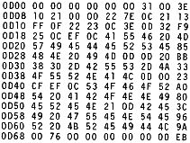

Nascom Journal |
Oktober/November 1982 · Ausgabe 10/11 |
Kürzlich habe ich das langgehegte Projekt verwirklicht, meinen Nascom 1 auf 4 MHz umzurüsten. Einfache Verdoppelung der Taktfrequenz (Brücke auf dem Buffer-Bord von 2 auf 4 Mhz) hilft nicht. Zwar laufen Programme im Ram problemlos, obwohl nicht die Z80-„A“ eingebaut ist. Programme im Eprom hingegen „stürzen ab“, obwohl z.B. Daten fehlerfrei aus Eproms ausgelesen werden können. Dies liegt daran, daß der M1-Zyklus (Einlesen des nächsten Befehls) schnellere Antwortzeiten erfordert als normale Speicherzugriffe. Eine Lösung des Problems besteht darin, jeden M1-Zyklus mit einem Wait-State zu verlängern. Dies leistet die abgebildete Schaltung. Das unterste IC ist keins sondern eine Fassung mit DIL-Stecker zum Anschluß ans Buffer-Board und für die Widerstände, da bei mir in Wrap-Technik aufgebaut. Mit dem Schalter kann man zwischen 2 MHz ohne und 4 Mhz mit Wait-States wählen. Vorsicht beim Umschalten! Da das Umschalten nicht synchronisiert ist (wäre machbar) und prellt, kann die CPU durcheinander kommen. Am sichersten ist es, die CPU vorher in den Halt-Zustand zu versetzen. Mit dieser Lösung läuft bei mir der Monitor, Basic, Assembler usw. fast ohne Probleme und fast doppelt so schnell wie früher. Damit ist der Nascom 1 sogar schneller als der Nascom 2, der jeden (nicht nur M1-) Speicherzugriff verlängert.
In einem älteren BYTE habe ich dieses Spiel gefunden und mit viel Aufwand an den Nascom angepaßt. Wahrscheinlich sind noch Fehler drin, da es mir noch nicht gelungen ist, bis zum Ende zu gelangen. Aber ich finde es doch so nett, daß ich es in dieser Form veröffentliche. Wer Fehler findet, kann zur Verbesserung das Original-Listing haben (Apple). Ich habe es nicht übersetzt, da im Original ein uriger Dialekt vorliegt und die (simple) Grammatik-Analyse ganz auf’s Englische abgestellt ist. Der Dialog ist in 2-Wort-Eingabe, z.B. „OPEN DOOR“ oder „LIGHT CANDLE“ (=mehr Licht). Die Schwierigkeit des Spieles besteht weniger im Erforschen eines komplexen Höhlensystems (wie bei Adventure), sondern im Lösen verschiedener Aufgaben (wo kriege ich 9ne Landkarte her, warum ist das Maultier so störrisch?).
Außerdem habe ich noch ein Listing für „Pirate’s Adventure“, im Original für Tandy, sicher auch nicht leicht anzupassen. Hat jemand Lust, das durchzuführen (und mir dann 9ne Kassette damit zu schicken)?
Tippe dieses kurze & gemeingefährliche Maschinenprogramm ein (Nassys1/3) und du wirst dich wundern! Eine Analyse der Funktion enthüllt einige Geheimnisse und Tricks in Nassys (vgl INMC-NEWS 7/1980).
| Seite 23 von 28 |
|---|